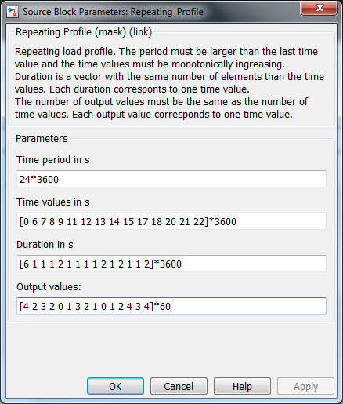

Repeating Profile
Path: CARNOT/Load/General
Purpose:
Create a repeating load profile keeping a constant values for a certain period.
Description:
Uses the pulse generator to create the profile. This generator creates a
sample time event for every change of the profile. So the the variable timestep
solver in Simulink hits the changes.
Parameters
Duration is a vector with the values. Each duration
corresponts to one time value. The number of output values must be the same as
the number of time values. Each output value corresponds to one time value.

Input: none
Output: Signal of the repeating profile
NOTE: -
Characteristics:
| Direct Feedthrough | : | No |
| Sample Time | : | Correspond to the time events |
| Vectorized | : | No |